Ataberk Uran
June 8, 2020
Shadow That Pervades
DePaul Originals Game Studio

Our tasks specifically for this quarter was to completely overhaul and redesign a new more compact city space. At the beginning of the quarter, well thought it was important to establish some idea of deadlines for where we as a team would want to be throughout the quarter. It also helped because we wanted to make sure the ideas for the new space were in scope as it appeared last quarter the city level was a bit too large to allow for an immersive experience. With my primary focus in environment art and Ataberks primary focus in Level Design, it was important to establish what would be an interesting, immersive, familiar, aesthetically pleasing space to play in. What were we trying to convey? What was the emotional tone? What were the main points of interest that we wanted to see focalized in the space? In the beginning few weeks, we looked at references from our own city Chicago and what intriguing or memorable areas would be visually appealing to see in a game space.
CONCEPT AND LAYOUT
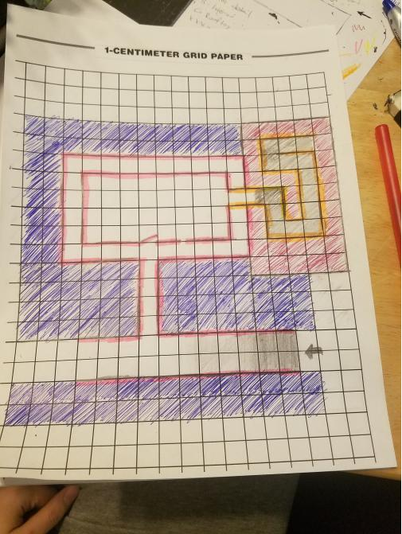
Something that was important for our space was to be able to tell stories visually and have them be believable. Each small area can be a narrative beat inside the level that has potential to tell or hint at a bigger picture. In this space the feeling we wanted to capture was loneliness and vulnerability. Chaos is all around Rose and she is still trying to grasp what is happening in the world around her.
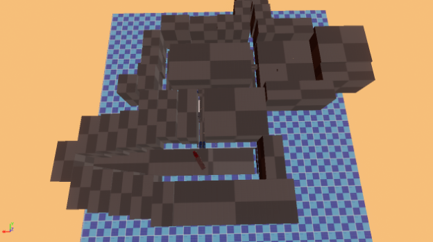
LOWER WACKER UNDERGROUND STREET
The previous level before the city is the sewer level with this gritty, grunge filled underground space, we had to figure out how we could transition smoothly from there into this more open city space that we were planning. The first area of importance then was “Lower Wacker Drive”.Set as the beginning of our space, our underground street area is meant to follow up on the previous area while also introducing the player to a different tone and feel. We wanted this to be a dimly lit eerie area, and we took a lot of inspiration from the halogen warm white street lights. These are scattered throughout Chicago and we believed that by intensifying the light to be a bit more warmer in this already darker place it would mimic a sketchy dangerous late-night lower wacker drive scene.
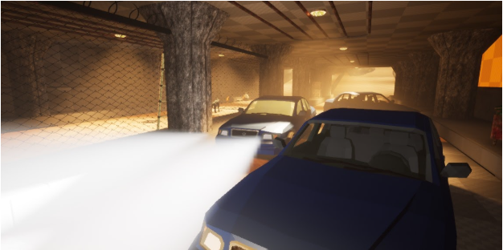
The environment is set out to have these straightaway strips scattered with abandoned cars. From an environment perspective, we tried to portray the fallout of this society by its remains. You have these vehicles twisted, turned, flipped over, and crashed to help support this. We also wanted darker grunge-like textures to aesthetically translate that eerie vulnerability for the player. We also populated the space with a number of objects that would be found in the actual lower wacker drive like garbage bags and dumpster, piles of junk built up by the sewer drains, concrete support pillars, rusty dripping pipes, old halogen light fixtures, caution road blocks blocking Roses path, ladders, pallets, boxes, and other debris littering the underground street. When combined together, placed and textured appropriately they help to bring more realism and believability to the playspace.
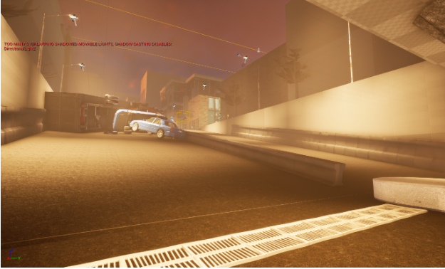
As you reach the end of the underground street you can start to see the space open up some as the space widens and you encounter the ramp leading up to the main street and our next area of interest, the Alleyway. Walking up the ramp we again have this major semi-truck crashing into these caution poles at the top of the ramp. This adds some visual interest but more importantly helps the player to question what happened in the space as they continue to experience these strange encounters. What we wanted to portray as you walk from the base of the street ramp to the entrance of the hallway is the change in lighting.
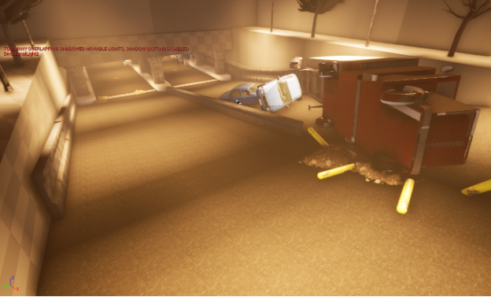
The setting for our scene is at the peak of dawn where the warm rays of sunlight are just breaking atop a few of the city buildings. Here you can see the use of volumetric lighting and fog as it scatters the sky with rays of light shooting through the rooftop of the alley. An interesting point here though and moving forward from area to area is we wanted the later parts of our level to have sunlight while the beginning areas were still in this nighttime setting.
ALLEYWAY
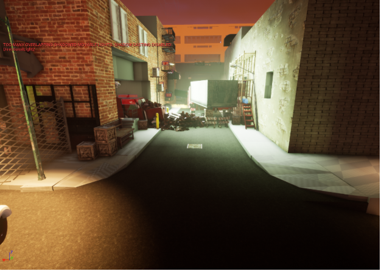
As you reach the top of the ramp you see a faint glimmer of green light rays to the right of you. As you look up a hotel sign on the side of the building is also pointing right. Both the lighting peeking out from here as well as the hotel signs arrow help to visually communicate to the player an area of interest that they should navigate to. As you turn to the right you encounter a packed, construction filled alleyway. At the end of the Alleyway you see the rays of sunlight hit the top of a massive parking complex (we also have a camera volume to lock Rose’s eyes on this focal point). We have now set into the players mind that this is a point of interest that they want to reach, but as they look down they see a number of obstacles along the alleyway that they must overcome in order to get there. We were inspired by the idea of an alleyway from downtown Chicago. In downtown Chicago you have these interesting thin side streets that act like alleyways where truck drivers and such go down to deliver shipments of goods to local businesses. We wanted to mimic something similar in our city level. Something important that we wanted to keep in mind is that we have a dog with a variety of different parkour mechanics. This is the first taste of verticality in the city level in which you have to use these mechanics to maneuver and overcome obstacles to navigate through the alleyway.
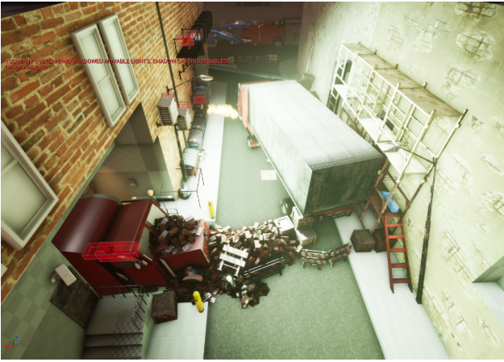
We wanted to indicate objects of importance based on their color. Giving them more value and an increase in saturation helped us to visually break them up from the rest of the objects. We were inspired by this from games such as mirrors edge and the Uncharted series where the objects that you interact with for verticality often draw your attention due to their color values. We used the color red to indicate where you are going is the right path overall in the level.In the space right now, the alleyway puzzle/parkour starts with the red ladder or the red truck.
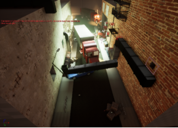 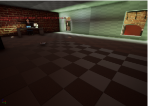
Players can travers the alleyway a couple different ways. We realized as gamers ourselves that we like to have options when we play to break up from the linear point A to point B flow. We wanted players to have an option in this space to pick and choose where they want to discover and how they want to reach to the ending of the alleyway. The alleyway consists of different interior and exterior spaces, such as: a loading dock, an office, and a ventilation system. Players can choose between parkouring from the air conditioners from that to the fire escape to avoid the hazardous spaces that Rose cannot reach initially, or they can choose to do the ventilation system and find their path in a first person mini puzzle/maze inside of the building.
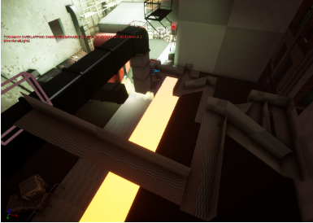
PARKING COMPLEX
The parking garage is this unique space where each of us as designers had an opportunity to show or express our ideas into the playable space on a floor to floor basis. We went in with guidance from Allen that the parking complex should be a “fun space” “a space where it’s fun to be a bad dog”. Knocking objects over, breaking stuff, and causing pandemonium as you frantically run around interacting with different objects. With that in mind we also believe that this space could be a super crucial story point and have a lot to tell about the past world that Rose is left venturing in. As leads we conveyed that this is a world left behind, sudden disappearances, the collapse of society as major cities now becoming a hub for survivors. While there are floors that you can run around and parkour in to have fun in the parking complex, we wanted to to act as this fallout citadel. People from around the city and rural areas gather in this space to try and form a community.
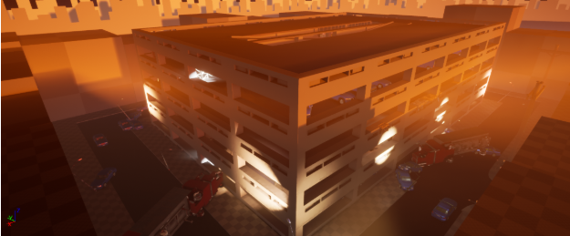
FLOOR 1
Originally the first floor was not going to be accessible as it was too dark and we wanted to keep verticality moving from the Alleyway into the Parking Complex. However we looked back on it later in the quarter and realized that not many spaces had taken advantage of roses “senses” mechanics. With this dark light space it was an opportunity to challenge the player by rendering their normal views useless in pitch black and forcing them to try different senses that could help them navigate through the space. Roses “pee sense” or marked territory indicator was a great way to help players navigate through a space they visually couldn’t see. The set up of the first floor is a maze of sharp corners, turns, and cubby holes that rose must crawl through to navigate through the maze. The trails are a good way to not necessarily fully expose the area, but give a general idea of where point to point is.
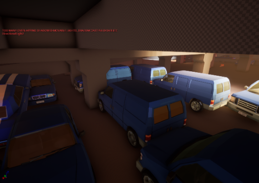
FLOOR 2
We assigned that the second floor is going to be a temporary living area for the people who fled from the suburbs into the city for shelter. We wanted to establish that feeling with temporary living objects such as tents, boxes, fires in barrel clothing for people and lamps around the space. About the layout of floor 2, we wanted players to explore the area we created, observe around the space as much as they can and figure out what happened here in this space. Therefore we made it so it is a space that you should navigate around in order to go upstairs. We wanted to block the going straight up with objects that made sense in this scenario such as wooden planks to burn, the tents and such. This gave us a unique layout we can now use and the player is obliged to walk around and discover.
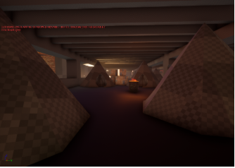 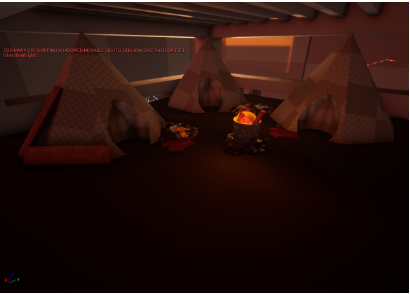
FLOOR 3
In every community or citadel there is a market where people can exchange goods to help them on their journeys or survive another day. We wanted to show that on the third floor of the parking complex. Here is where survivors can trade and exchange valuable goods and information to aid them. We often asked ourselves “If we were in their situation what would be something beneficial to survival?” We tasked our designers to layout the space to keep a theme of “one man’s junk is another man’s treasure”. It was also important to have a more natural layout to the space as we expressed to the designers. In those times people were not worried about being neat and tidy about the way they had their shops or goods setup, some could have even been selling right out of their tents or homes. It was important that it was laid out as such and wasn’t structured to be lined up perfectly.
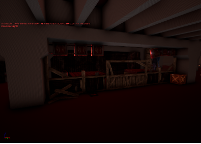 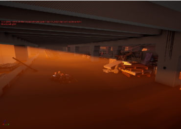
FLOOR 4
Fourth floor is where they put the unwanted things. Once people started living here, the cars, unused boxes, anything they did not need, they stockpiled it on the fourth floor. We designated this space to be the place to be a bad dog and have fun. This is the area where you can knock down boxes, tear up garbage bags, jump on cars, and overall a space that you can do the stuff you shouldn’t do in the first place but that’s where the fun comes from.
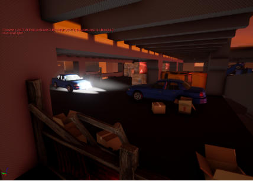 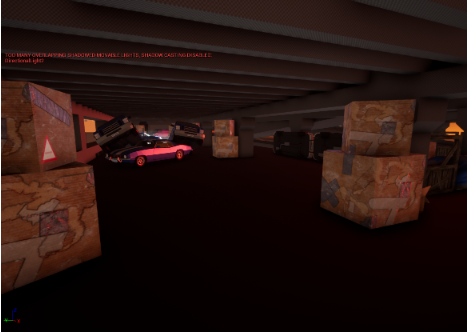
FLOOR 5
Leaving the fifth floor empty was an intentional design decision. On other floors there are lots of things happening story and structure wise. With leaving the top floor empty, we wanted to give the player a room to breathe and relax. With the beautiful lights coming to the rooftop of this building, we wanted the player to see the journey that they had overcome as they looked atop the parking complex and see all the obstacles they had overcome.Their journey in this chaos came to an end and they succeeded to find inner peace. We were heavily influenced by the eagles peak in Assassin’s creed games where the player sits atop the highest point in the level and sees everything around them. We thought it would be really cool to see Rose sitting atop the building as she conquers the city.
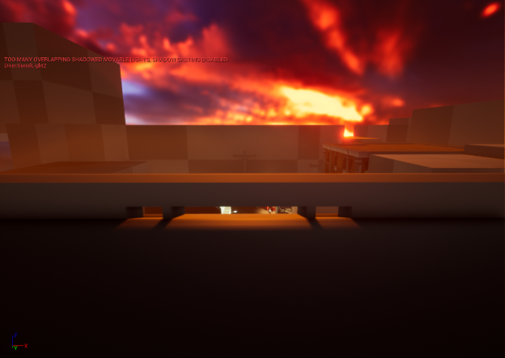
comments powered by Disqus